Create curved text in ggplot2
The existing text-based geom layers in ggplot2 (geom_text and geom_label) are ideal for the majority of plots, since typically textual annotations are short, straight and in line with the axes. However, there are some occasions when it is useful to have text follow a curved path. This may be to create or recreate a specific visual effect, or it may be to label a circular / polar plot in a more “natural” way. Direct and automatic text labels that adhere to their associated line can also provide a neat alternative to legends, without the need for specifying exact label positions, and with a lower risk of overplotting.
Using geomtextpath, your text can follow any path, and will remain correctly spaced and angled, even if you change the size and aspect ratio of your plotting device. It does so without the need to redraw your plot each time, as shown in the introduction vignette.
Installation
You can install the development version of geomtextpath from GitHub with:
# install.packages("remotes")
remotes::install_github("AllanCameron/geomtextpath")Using geomtextpath
Once installed, we simply call:
library(geomtextpath)
#> Loading required package: ggplot2The core functions in this package, geom_textpath and geom_labelpath, work like any other geom in ggplot2. They take their co-ordinates, their y co-ordinates and their text label from an aesthetic mapping. At its most basic, this allows the label to be plotted on an arbitrary path, as shown in the following example:
# Set a consistent theme for the plots here
theme_set(theme_minimal() +
theme(axis.line = element_line(size = 0.25, colour = "gray75")))
t <- seq(5, -1, length.out = 1000) * pi
spiral <- data.frame(x = sin(t) * 1:1000,
y = cos(t) * 1:1000,
text = paste("Like a circle in a spiral,",
"like a wheel within a wheel,",
"never ending or beginning,",
"on an ever spinning reel")
)
ggplot(spiral, aes(x, y, label = text)) +
geom_textpath(size = 7, vjust = 2, text_only = TRUE) +
coord_equal(xlim = c(-1500, 1500), ylim = c(-1500, 1500))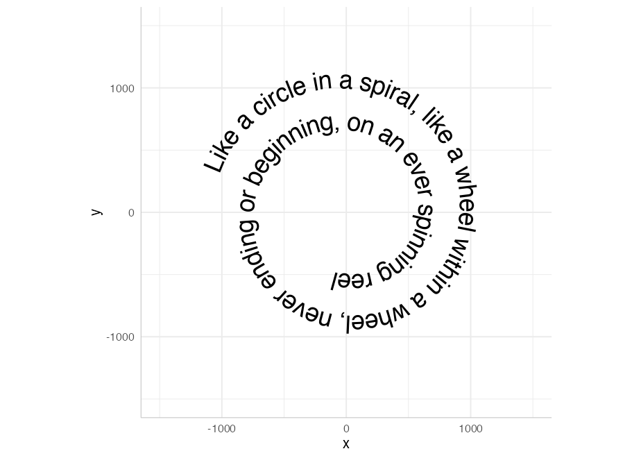
If we want our text in a box, even when the text is curved, we can use geom_labelpath instead:
set.seed(5)
df <- data.frame(x = spline(1:5, runif(5), xout = seq(1, 5, 1/100))$y,
y = spline(1:5, runif(5), xout = seq(1, 5, 1/100))$y,
z = "A curved textbox on an arbitrary path")
ggplot(df, aes(x, y, label = z)) + geom_labelpath(size = 5, fill = "#F6F6FF")Of course, the point of this package is not to produce such graphical novelties, but to provide an easy and visually appealing way to present your data. Just as geom_path is the foundation for several other geoms in ggplot2, so too are geom_textpath and geom_labelpath the foundation of the other geoms in this package. The line-based geoms in ggplot all have two equivalents in this package:
| ggplot geom | Text equivalent | Label equivalent |
|---|---|---|
geom_path |
geom_textpath |
geom_labelpath |
geom_segment |
geom_textsegment |
geom_labelsegment |
geom_line |
geom_textline |
geom_labelline |
geom_abline |
geom_textabline |
geom_labelabline |
geom_hline |
geom_texthline |
geom_labelhline |
geom_vline |
geom_textvline |
geom_labelvline |
geom_curve |
geom_textcurve |
geom_labelcurve |
geom_density |
geom_textdensity |
geom_labeldensity |
geom_smooth |
geom_textsmooth |
geom_labelsmooth |
geom_contour |
geom_textcontour |
geom_labelcontour |
geom_density2d |
geom_textdensity2d |
geom_labeldensity2d |
geom_sf |
geom_textsf |
geom_labelsf |
Each of these aims to replicate all the functionality of the equivalent ggplot2 function, but with direct text labels that follow the shape of the lines drawn.
For the special case of geom_sf, which draws different shapes based on the geometry objects drawn, the equivalent geom_textsf and geom_labelsf, will identify and label the linestring components (typically rivers and roads), without attempting to label polygons.
geom_textline and geom_labelline
You can use geom_textline and geom_labelline as a drop in for geom_line if you want it directly labelled. Just pass the label you want as an argument to geom_textline (or if you have grouped data you can pass the label as an aesthetic mapping). As in the other geoms here, you can specify the line’s appearance and the text’s appearance separately.
ggplot(pressure, aes(temperature, pressure)) +
geom_textline(label = "Mercury vapor pressure", size = 6, vjust = -0.5,
linewidth = 1, linecolor = "red4", linetype = 2,
color = "deepskyblue4")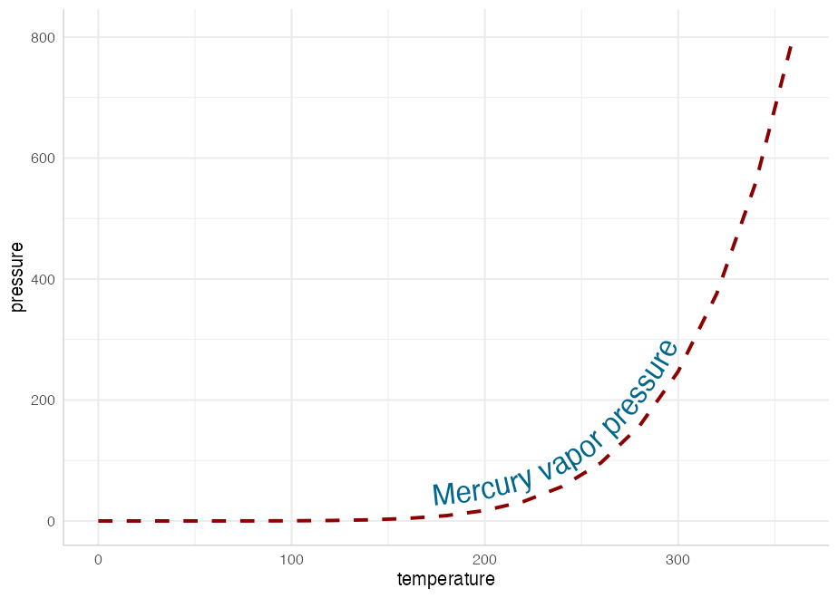
geom_textdensity and geom_labeldensity
These are the analogues of geom_density that allows for smoothly curved labels on density plots
ggplot(iris, aes(x = Sepal.Length, colour = Species, label = Species)) +
geom_textdensity(size = 6, fontface = 2, hjust = 0.2, vjust = 0.3) +
theme(legend.position = "none")Note that we have been able to “reclaim” the space normally taken up by the legend without leaving any ambiguity in the plot.
geom_textsmooth and geom_labelsmooth
We can use these geoms to get labelled trend lines through scatterplots:
ggplot(iris, aes(x = Sepal.Length, y = Petal.Length, color = Species)) +
geom_point(alpha = 0.3) +
geom_labelsmooth(aes(label = Species), text_smoothing = 30, fill = "#F6F6FF",
method = "loess", formula = y ~ x,
size = 4, linewidth = 1, boxlinewidth = 0.3) +
scale_colour_manual(values = c("forestgreen", "deepskyblue4", "tomato4")) +
theme(legend.position = "none")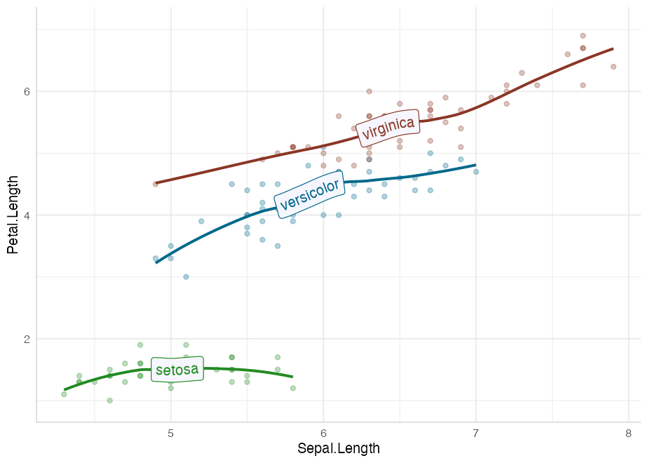
Note that by design, we have not included the standard error ribbon in these geoms because the naming of the fill aesthetic would clash with the fill of the text boxes. If necessary, a standard geom_smooth can be drawn first to obtain the ribbon.
Labelled contour lines
Adding labels to the level of your contour lines is now as simple as calling geom_textcontour or geom_labelcontour instead of geom_contour:
df <- expand.grid(x = seq(nrow(volcano)), y = seq(ncol(volcano)))
df$z <- as.vector(volcano)
ggplot(df, aes(x, y, z = z)) +
geom_contour_filled(bins = 6, alpha = 0.6) +
geom_textcontour(bins = 6, size = 2.5, straight = TRUE) +
scale_fill_manual(values = terrain.colors(11)) +
theme(legend.position = "none")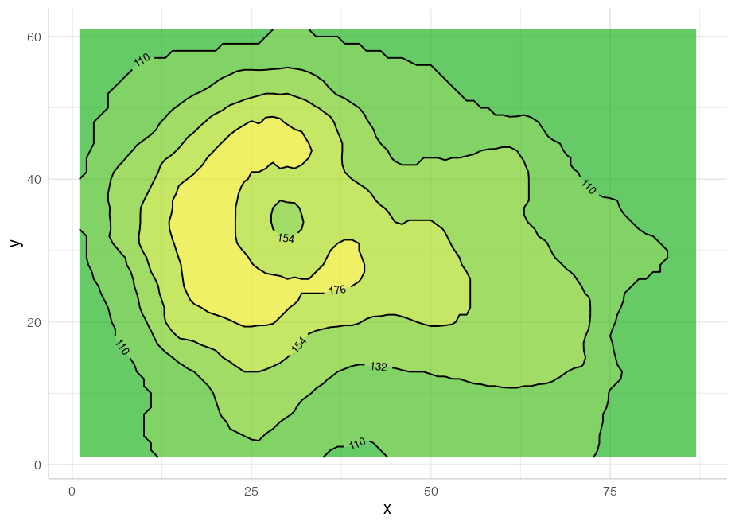
We also have geom_textdensity2d and geom_labeldensity2d for the common use case of 2D density contours:
set.seed(1)
df <- data.frame(x = rnorm(100), y = rnorm(100))
ggplot(df, aes(x, y)) +
geom_textdensity2d()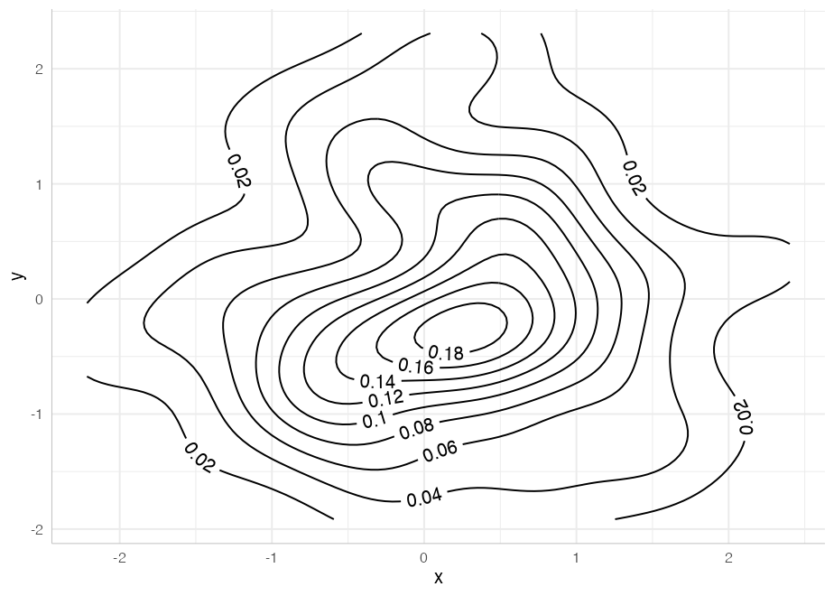
geom_textsf and geom_labelsf
These geoms behave much the same way as geom_sf, except linestrings such as rivers and roads can be given (curved) text labels:
library(sf)
#> Linking to GEOS 3.8.1, GDAL 3.2.1, PROJ 7.2.1; sf_use_s2() is TRUE
df <- data.frame(x = c(-4.2518, -3.1883),
y = c(55.8642, 55.9533),
label = c("Glasgow", "Edinburgh"))
ggplot(data = df) +
geom_textsf(data = waterways,
aes(label = name), text_smoothing = 65, linecolour = "#8888B3",
color = "gray30", vjust = -0.8, fill = "#E6F0B3",
alpha = 0.8, fontface = 3, size = 3) +
geom_point(aes(x, y), data = df, color = "gray50", size = 3) +
geom_textpath(aes(x, y, label = label), color = "gray50",
hjust = c(-0.2, 1.2)) +
theme(panel.grid = element_line()) +
lims(x = c(-4.7, -3), y = c(55.62, 56.25))Reference lines
Often, a reference line added to a plot requires a text annotation. We can do this directly with geom_textabline, geom_textvline and geom_texthline, or their text-box equivalents geom_labelabline, geom_labelvline and geom_labelhline. Although such lines aren’t curved, there are some benefits to using the geomtextpath functions if a labelled reference line is required: only a single call is needed, co-ordinates are not required for the text label, the text can be put in-line with an appropriate break in the line automatically, and the label will orientate and curve appropriately in polar co-ordinates.
This example shows all three text-based reference line geoms:
ggplot(mtcars, aes(mpg, disp)) +
geom_point() +
geom_texthline(yintercept = 200, label = "displacement threshold",
hjust = 0.8, color = "red4") +
geom_textvline(xintercept = 20, label = "consumption threshold", hjust = 0.8,
linetype = 2, vjust = 1.3, color = "blue4") +
geom_textabline(slope = 15, intercept = -100, label = "partition line",
color = "green4", hjust = 0.6, vjust = -0.2)In addition to the straight reference lines, there is also a pair of geom layers for curved reference lines: geom_textcurve and geom_labelcurve. These are typically used for annotations.
df <- data.frame(Activity = c("Work", "Play"), Happiness = c(0.5, 0.7))
ggplot(df, aes(Activity, Happiness)) +
geom_col(fill = "gold", color = "gray50") +
geom_textcurve(data = data.frame(x = 1, xend = 2, y = 0.72, yend = 0.52),
aes(x, y, xend = xend, yend = yend), hjust = 0.4,
curvature = -0.8, label = "significant difference") +
geom_point(aes(y = Happiness + 0.02)) +
scale_y_continuous(limits = c(0, 1))Arbitrary stat transformations
Other “stat” transformations can be used directly on geom_textpath and geom_labelpath. For example, functions can be labelled with paths created in stat_function:
ggplot() +
xlim(c(0, 1)) +
stat_function(geom = "textpath",
fun = dgamma, color = "red4",
label = "gamma distribution with shape = 1",
size = 5, vjust = -0.2, hjust = 0.1, args = list(shape = 1)) +
stat_function(geom = "textpath",
fun = dgamma, color = "blue4",
label = "gamma distribution with shape = 2",
size = 5, vjust = -0.2, hjust = 0.1, args = list(shape = 2)) +
stat_function(geom = "textpath",
fun = dgamma, color = "green4",
label = "gamma distribution with shape = 3",
size = 5, vjust = -0.2, hjust = 0.1, args = list(shape = 3))Controlling text position
Just like geom_text, the vjust parameter controls vertical justification of the text, though in geom_textpath and its related geoms, the text is justified relative to the path rather than a single point. If the vjust parameter moves the text above or below the line, the line is automatically “filled in”.
For short text labels applied to long paths, we need a parameter to control how far along the path the text is placed. For this we use the horizontal justification (hjust) parameter. This can be numeric (0 to 1), or can accept position descriptions such as “xmid”, “ymax”, or “auto”.
Here is an example of text justified above the line of the path using a small negative value of vjust, and the hjust set to “ymax” to place the labels over the peak of each curve:
p <- ggplot(iris, aes(x = Sepal.Length, colour = Species, label = Species)) +
theme(legend.position = "none")
p +
geom_textdensity(size = 6, fontface = 2, spacing = 50,
vjust = -0.2, hjust = "ymax") +
ylim(c(0, 1.3))You can read more about text positioning in the aesthetics vignette.
Smoothing text while preserving path details
Some lines may be too “noisy” or too angular for direct labels to remain legible if they adhere too closely to the line. We have therefore added the ability to smooth the text label while keeping the path unaltered, using a text_smoothing parameter, which can be set from 0 (none) to 100 (maximum).
ggplot(economics, aes(date, unemploy)) +
geom_textline(linecolour = "grey", size = 4, vjust = -1,
label = "1990s Decline", text_smoothing = 30)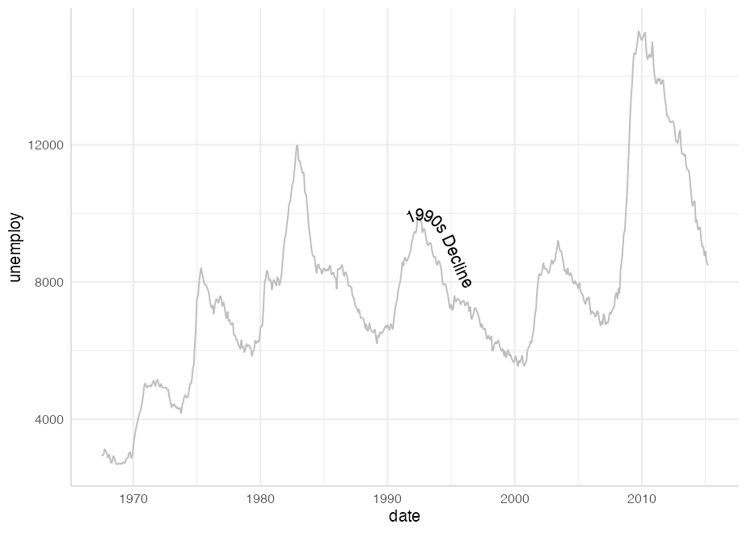
Plotmath support
If you want to use plotmath expressions you can do so much as you would with geom_text. Just tell geom_textpath that your labels should be parsed using parse = TRUE
lab <- expression(paste("y = ", frac(1, sigma*sqrt(2*pi)), " ",
plain(e)^{frac(-(x-mu)^2, 2*sigma^2)}))
df <- data.frame(x = seq(-2, 0, len = 100),
y = dnorm(seq(-2, 0, len = 100)),
z = as.character(lab))
ggplot(df, aes(x, y)) +
geom_textpath(aes(label = z), vjust = -0.2, hjust = 0.1, size = 8, parse = TRUE)
Note that, due to the way the grid package draws plotmath expressions, all plotmath labels will be straight rather than curved. However, as in the example above, they will still be angled according to the gradient of the curve.
Rich text support
The geoms here also feature richtext support. If you want your text labels to be interpreted as rich text, simply pass rich = TRUE as a parameter in the call to the geom layer
lab <- paste("<span style='color:gray30;font-size:10pt'>Plasma</span>",
"<strong style='color:red4;font-size:10pt'>Indometacin</strong>",
"<span style ='color:gray30;font-size:10pt'>Concentration </span>",
"<i style='color:gray50;font-size:8pt'><sub>(\u03BCg/l)</sub></i>")
ggplot(Indometh, aes(time, conc, group = 1)) +
geom_textsmooth(formula = y ~ x, method = loess,
label = lab, rich = TRUE, vjust = -0.5, size = 4.5,
text_smoothing = 40, linecolor = "red4") +
xlim(c(0, 4))
#> Warning: Removed 18 rows containing non-finite values (stat_smooth).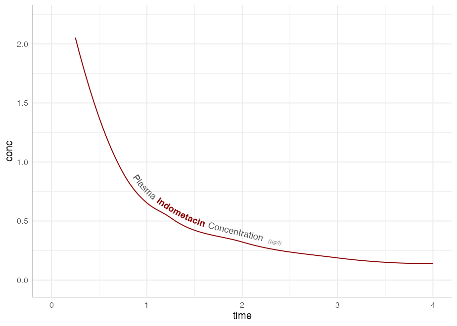
Text paths in polar coordinates
Straight text paths in Cartesian coordinates become curved in polar coordinates.
df <- data.frame(x = c(1, 1000), y = 1, text = "This is a perfectly flat label")
p <- ggplot(df, aes(x, y, label = text)) +
geom_labelpath(size = 6, text_only = TRUE, fill = "#F6F6FF") +
ylim(c(0.9, 1.1))
p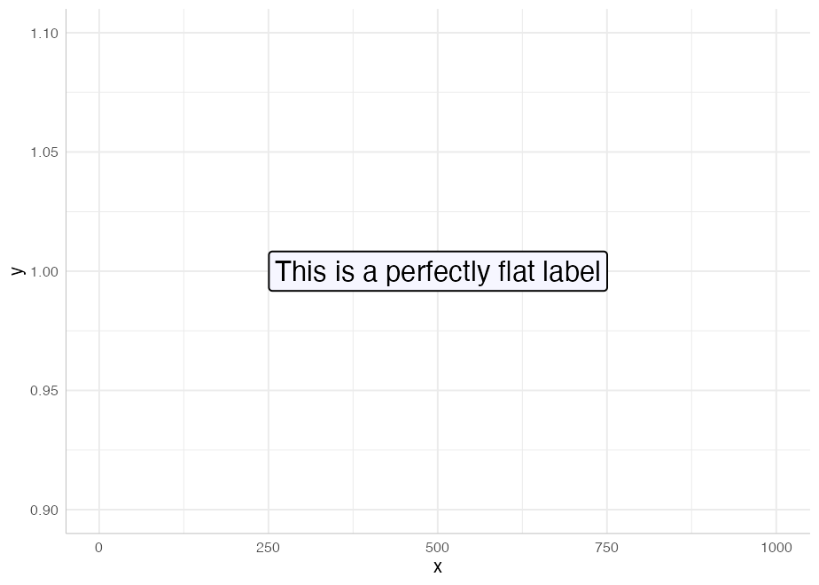
p + coord_polar()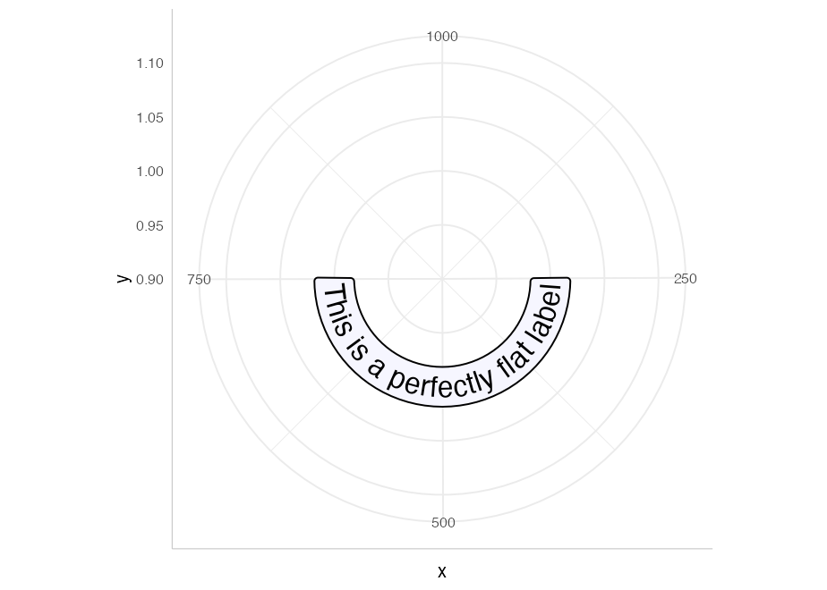
We have included the ability to have point-like text paths. While this sounds paradoxical, it means that geom_textpath can be used as a drop-in for geom_text, and will behave in much the same way, with the exception that the text will automatically curve in polar co-ordinates. The best way to show this is with a head-to-head comparison.
df <- data.frame(x = 1:4, y = c(4, 7, 6, 3),
color = c("royalblue", "orangered", "deepskyblue4", "violet"))
p <- ggplot(df, aes(x, y, color = color, label = color)) +
geom_point(size = 1.5) +
scale_color_identity() +
lims(x = c(0, 6), y = c(0, 8))
p_text <- p + geom_text(size = 8, hjust = -0.1)
p_textpath <- p + geom_textpath(size = 8, hjust = -0.1)Note that p_text and p_textpath are made with the same base plot and data. In normal Cartesian Co-ordinates they are essentially identical:
p_text
p_textpathBut note the difference when we switch to polar co-ordinates:
p_text <- p_text + coord_polar()
p_textpath <- p_textpath + coord_polar()
p_text
p_textpath
By default, any labels that would have been upside down (or even mostly upside down) are automatically flipped to be facing in a legible direction. This can be turned off using upright = FALSE in the call to geom_textpath.
We can even construct complex diagrammatic plots:
p <- data.frame(x1 = c(seq(0, 10/6 * pi, pi/3),
seq(0, 10/6 * pi, 2*pi/3)),
y1 = c(rep(2, 6), rep(-1, 3)),
x2 = c(seq(0, 10/6 * pi, pi/3) + pi/3,
seq(0, 10/6 * pi, 2*pi/3) + 2*pi/3),
y2 = c(rep(4, 6), rep(2, 3)),
group = letters[c(1:6, (1:3) * 2)],
alpha = c(rep(1, 6), rep(0.4, 3))) |>
ggplot(aes(x1, y1)) +
geom_rect(aes(xmin = x1, xmax = x2, ymin = y1, ymax = y2, fill = group,
alpha = alpha),
color = "white", size = 2) +
geom_textpath(data = data.frame(x1 = seq(0, 2 * pi, length = 300),
y1 = rep(0.5, 300),
label = rep(c("stats", "effects", "polar"), each = 100)),
aes(label = label), linetype = 0, size = 8,
upright = TRUE) +
geom_textpath(data = data.frame(x1 = seq(0, 2 * pi, length = 300),
y1 = rep(3, 300),
label = rep(c("density", "smooth", "unique", "organic",
"easy to use", "automatic"),
each = 50)),
aes(label = label), linetype = 0, size = 4.6, color = "white",
upright = TRUE) +
scale_y_continuous(limits = c(-5, 4)) +
scale_x_continuous(limits = c(0, 2*pi)) +
scale_fill_manual(values = c("deepskyblue3", "deepskyblue4",
"green3", "green4","tomato", "tomato2")) +
scale_alpha_identity() +
theme_void() +
theme(legend.position = "none")
pThat flip nicely to polar co-ordinates.
p + coord_polar()
coord_curvedpolar
Another function exported from this package is coord_curvedpolar. This behaves identically to coord_polar, except that the circumferential axis labels are curved. For example:
clock <- function(x) {
hours <- c(rep(x[1] %% 12 + tail(x, 1) / 60, 2), 0, 3.5)
minutes <- c(rep(tail(x, 1)/5, 2), 0, 5)
ggplot(as.data.frame(rbind(hours, minutes)), aes(V1, V3)) +
geom_segment(aes(xend = V2, yend = V4),
size = c(3, 2), lineend = "round") +
geom_point(x = 0, y = 0, size = 6) +
scale_x_continuous(limits = c(0, 12), breaks = 1:12,
label = as.roman) +
scale_y_continuous(limits = c(0, 6), expand = c(0, 0)) +
theme_void() +
theme(axis.text.x = element_text(size = 25, face = 2),
plot.margin = margin(20, 20, 20, 20))
}
clock(03:35) + coord_polar()
clock(19:15) + coord_curvedpolar()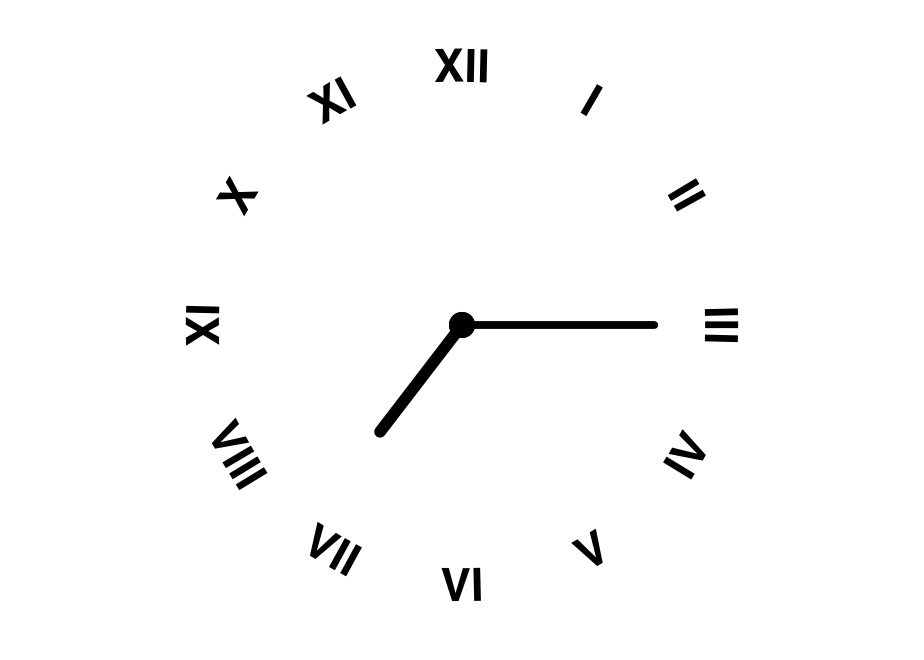
This can be useful to achieve a particular aesthetic effect (as above), but can also be of practical utility when axis labels are long, which can produce some problems in standard coord_polar:
df <- data.frame(x = c("A long axis label", "Another long label",
"The longest label of all", "Yet another label"),
y = c(8, 6, 10, 4))
p <- ggplot(df, aes(x, y, fill = x)) +
geom_col(width = 0.5) +
scale_fill_brewer(type = "qual") +
theme(axis.text.x = element_text(size = 15),
legend.position = "none")
p + coord_polar()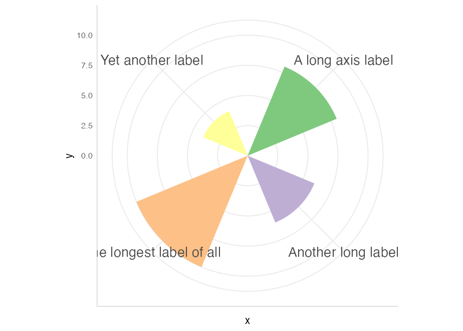
p + coord_curvedpolar()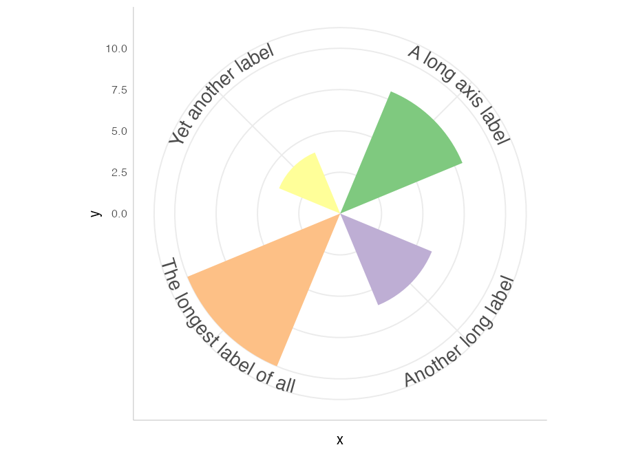
You can see more examples in the gallery vignette.
Limitations
There are limitations inherent in the plotting of text elements in ggplot due to the way that the underlying grid graphics handles text. A text string is dealt with as a zero-width object, and therefore the rotation and spacing of the letters making up the string can only be dealt with by treating each letter separately.
It is important to realise that the letters are only rotated, and do not undergo any change in shape. Thus, for example, large text appearing on convex curves will not be deformed so that individual letters are narrower at the bottom and wider at the top. Doing so would require reinterpreting the letters as polygons, which would likely cause more problems than it would solve.
Other paths may have points of tight curvature, and setting an offset / vjust for the text that is larger than the distance to the focus point of that curve will produce odd effects. The package tries to detect and warn the user when this happens, and will suggest remedies.
Acknowledgments
The authors would like to thank Patrick Plenefisch for posting the Stackoverflow question that prompted them to develop this package, and for raising some important issues early in its development.
Of course this package wouldn’t be possible without the brilliant ggplot2 package. Although we’re grateful to all the developers on the tidyverse team for creating and maintaining such useful open-source software, we’d like to give particular thanks to Claus Wilke for also creating the excellent gridtext package from which geomtextpath borrows, and Thomas Lin Pedersen, whose textshaping package was integral to getting the mechanism working.